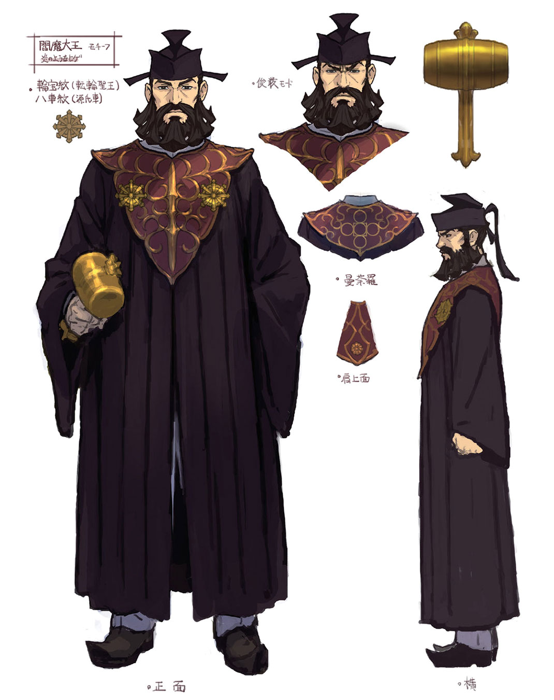
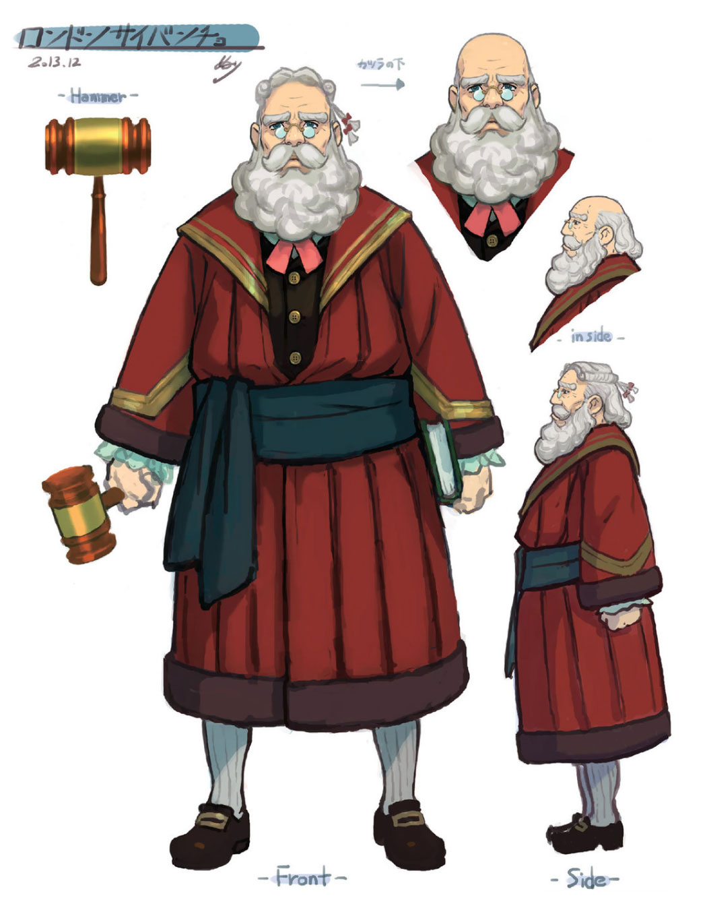
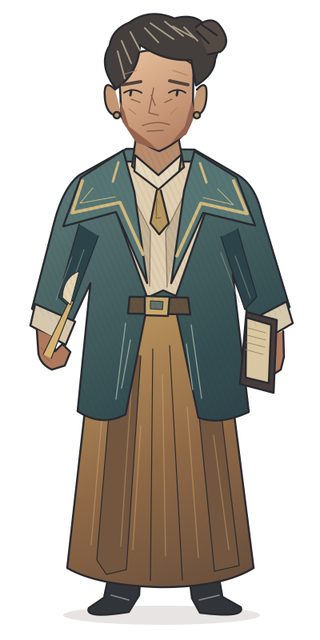
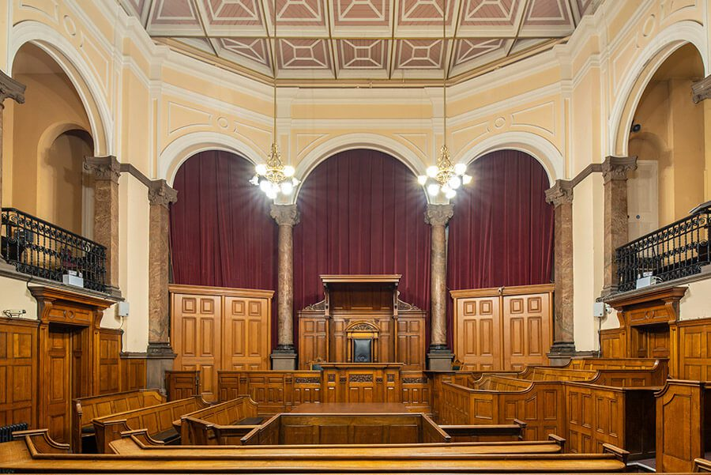
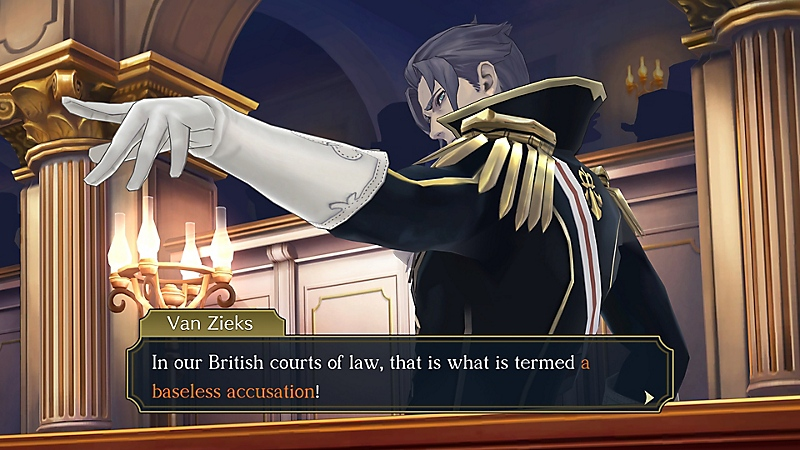
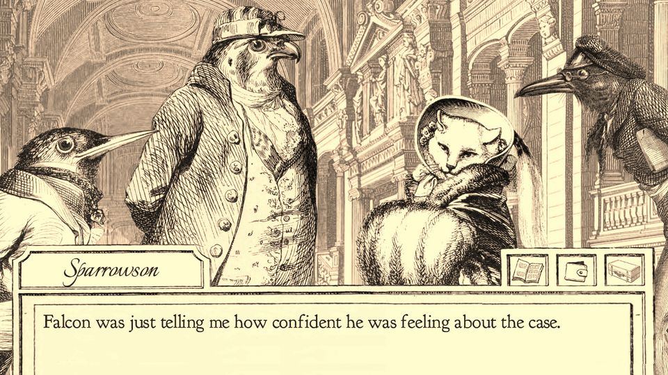
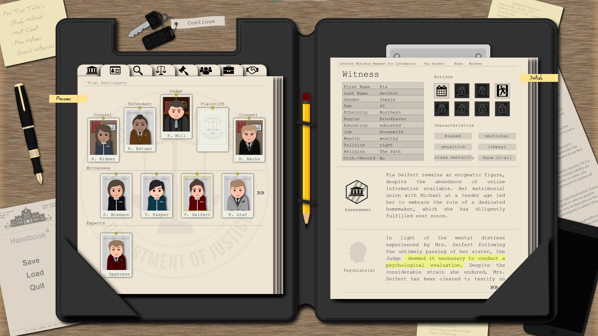
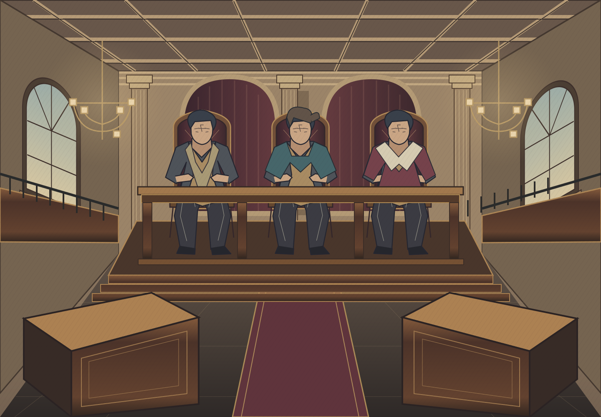

The courtroom is the interface.
A room with weight.
A panel with presence.
A reference-led reset, not a reskin. Original architecture, substantial character silhouettes, opposing advocate identities, and a court record that belongs to the world.
Three characters.
One illustrated universe.
The two exact source references, alongside an original woman costume rough at equal display height. References are not application assets.

Empire of Japan judge
Adapt the commanding silhouette, layered costume, facial planes, and deliberate ink work. Do not copy the hat, face, embroidery, or robe.
Artwork source ↗ Concept sheet ↗
British Empire judge
Adapt the substantial volume, readable expression, costume construction, and folds. Do not copy the beard, sash, robe design, or props.
Artwork source ↗ Concept sheet ↗
Woman judicial character
Equally authoritative: a broad teal cape, structured coat, ochre skirt, mature face, ledger, and quill. No invented name or assigned perspective.
Open full-size rough ↗ Design notes ↗Art-quality gate: the original is an ink-and-colour design rough, not painterly parity with the Capcom references. The two original male characters and the final unified three-character set still need production and approval. The old judge vectors will not be reused.
Architecture, not scenery.
Height above the bench. Depth along the aisle. Light on the people, not a dark strip framed by software chrome.

R4 · National Justice Museum
Carry forward the coffered ceiling, full-height arches, gallery depth, warm plaster, and raised timber bench. This is architectural evidence, not a background to copy.
Museum source ↗
R3 · Official PlayStation alternative
Carry forward foreground scale, layered architecture, and a restrained dialogue region. The specified Nintendo Life wide shot is blocked by HTTP 403, so its precise composition has not been verified.
Official gallery ↗ Requested wide reference ↗

R5 · Aviary Attorney
Fine ink, selective crosshatching, paper restraint. Keep the Delegates court colourful; do not turn the whole experience into sepia or copy the animal cast.
Official press kit ↗
R6 · Jury Trial
A court record should feel like an actual working document. Use a continuous register below the stage, not a nested cream dashboard card.
Game and screenshot source ↗The hearing takes the stage.
A continuous 75% court and 25% conversation surface. The three equal seated figures are full-body placement stand-ins, not approved character artwork.
Open composition at full browser width ↗Inspect original spatial rough ↗

Substantial stage
Full-height architecture, open raised bench, equal seats, visible lower-body silhouettes. Opposing foreground stations establish a real floor and aisle.
Logo as advocate
Intact marks in circular presentation fields above their own stations. No square app tiles, mascot faces, logo distortion, or recolouring.
Document as record
A continuous clerk’s register with item wording and status, then expandable rationale. One paper surface, not a stack of cards.
Seven seconds into the room.
Four camera beats before the working view. These are static framing studies, not a claim that the final intro has been built.

Skip intro ↗The case is called.Entry / aisle
Dark threshold parts. Foreground rails travel fastest; the bench remains the distant anchor.
Bench reveal
Push toward all three judges together. One restrained gesture each. No invented names.
Advocate reveal
Widen toward the floor. Provider marks, opposing stations, then owner nameplates.
Full-court wide
Settle. Enter Court moves this scene into the 75% column as the room panel appears.
Skip remains available from the first frame. No sound. Reduced motion starts at the static wide shot. Camera motion will use layered 2D transforms, not imply a real-time 3D environment.
What carries into the rebuild.
Keep the working behaviour
Event IDs, deduplication, pause/step/restart, all eight event types, four-round limit, docket history, explicit sample human appeal, and Markdown exports. Preserve the backend and current architecture.
Rebuild the presentation
The room, all judge art, stage identities, page hierarchy, cinematic framing, docket surface, and readable type scale. Retire the old artwork and invented names, not just their CSS.
Truthful integration boundary
Still an offline prototype until authorised and verified. No fake live badge, fabricated thinking state, guessed Switch endpoint, or unsupported composer. A genuine connected mode must use actual source messages and verified heartbeat/state.
Not yet complete
Final hand-drawn character set, pose/state assets, layered camera animation, real feed investigation, responsive interaction QA, and final visual approval. This study proves none of those by itself.